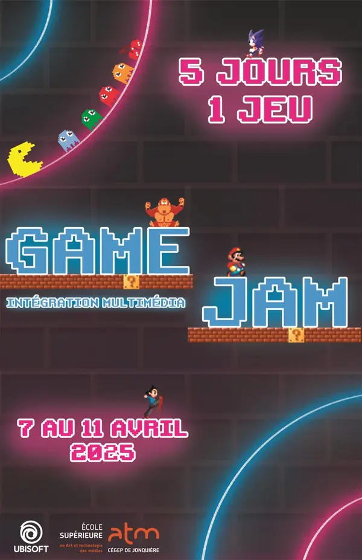
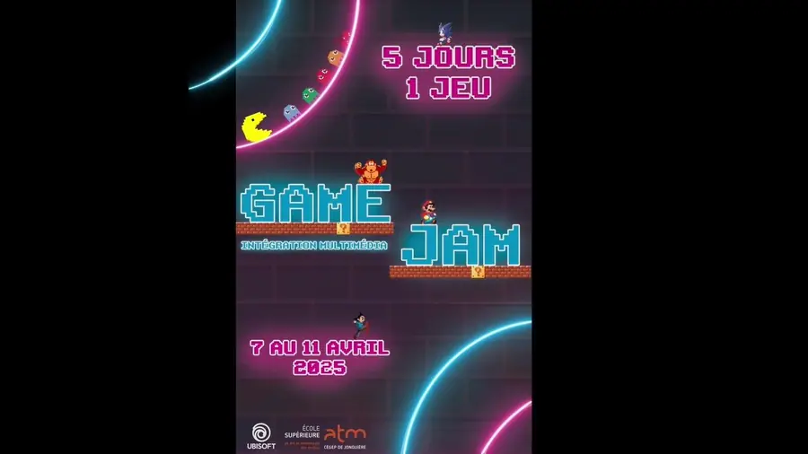

Projet 05 · Hiver 2025 · Projet de session
Game Jam : affiche et mapping vidéo
Une affiche pour le Game Jam d’Intégration multimédia, reprise en mapping vidéo projeté en classe.
- Graphisme
- Communication
Mon rôle
Seul : l’affiche et le mapping vidéo.
Outils
- Photoshop
- Illustrator
- After Effects
Côté coulisses
-
Brief
Une affiche pour le Game Jam « 5 jours, 1 jeu », du 7 au 11 avril 2025.

L’affiche -
Plan
L’univers arcade des années 80-90 : néons bleu et rose, pixel art, typographie en blocs.
-
Production
L’affiche (titre dans Illustrator), puis sa reprise en mapping vidéo : chaque élément apparaît en musique, comme sur un écran de borne d’arcade.

Une image du mapping vidéo -
Résultat
Une vidéo de 30 secondes, projetée en classe.
Le mapping vidéo de 30 secondes, avec musique.
Projet scolaire. Les personnages (Mario, Sonic, Pac-Man…) appartiennent à leurs détenteurs de droits.